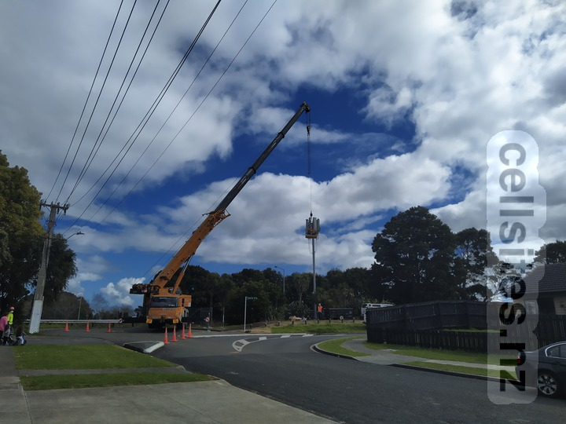
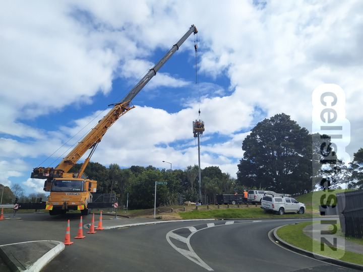
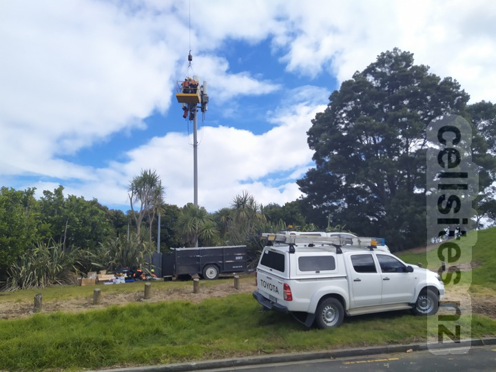

2degrees Papatoetoe West
- ID: AKL-008-019
- Code: PPTW
- GIS Geek
2degrees Papatoetoe Central AAU
- ID: AKL-008-122
- Code: PCAU
- GIS Geek
Vodafone Papatoetoe South Western Motorway
  
2degrees Hunters Plaza In Building Site
- ID: AKL-008-095